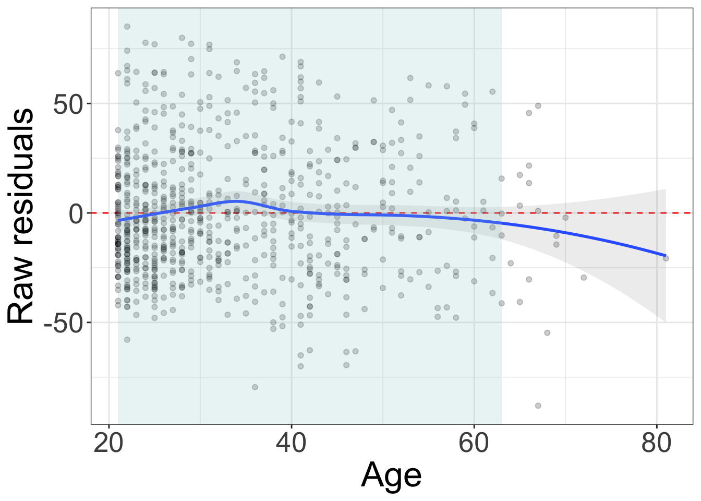
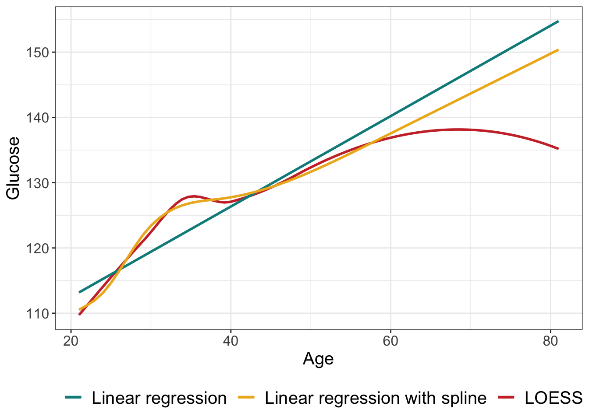
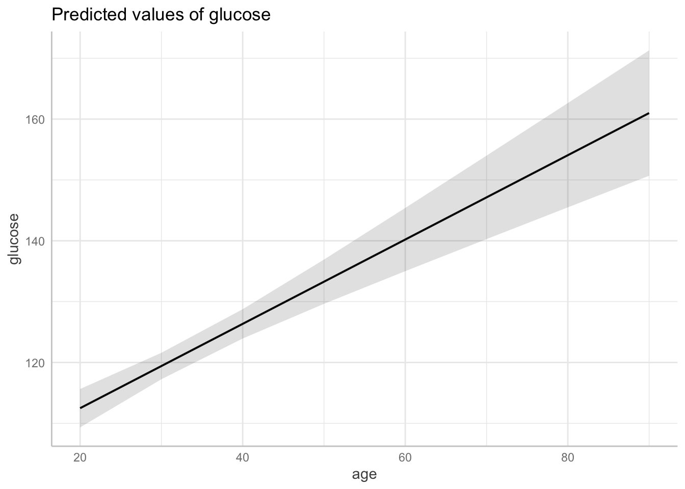
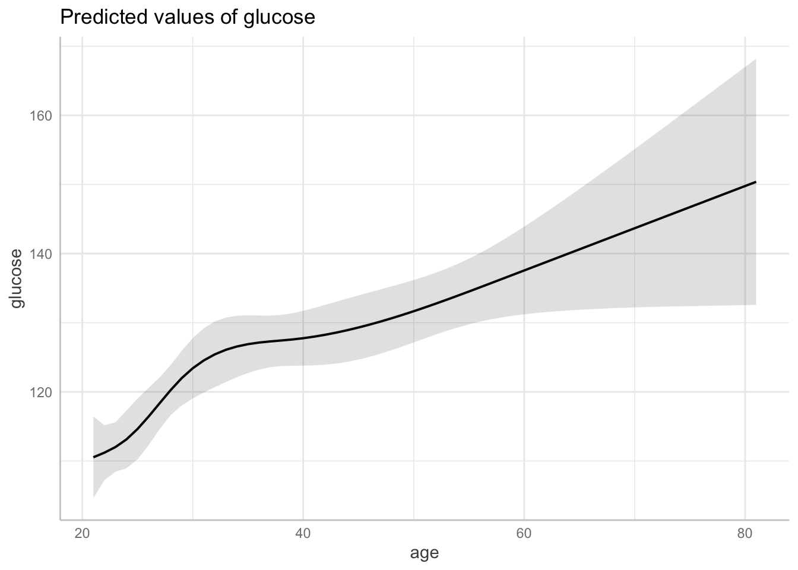
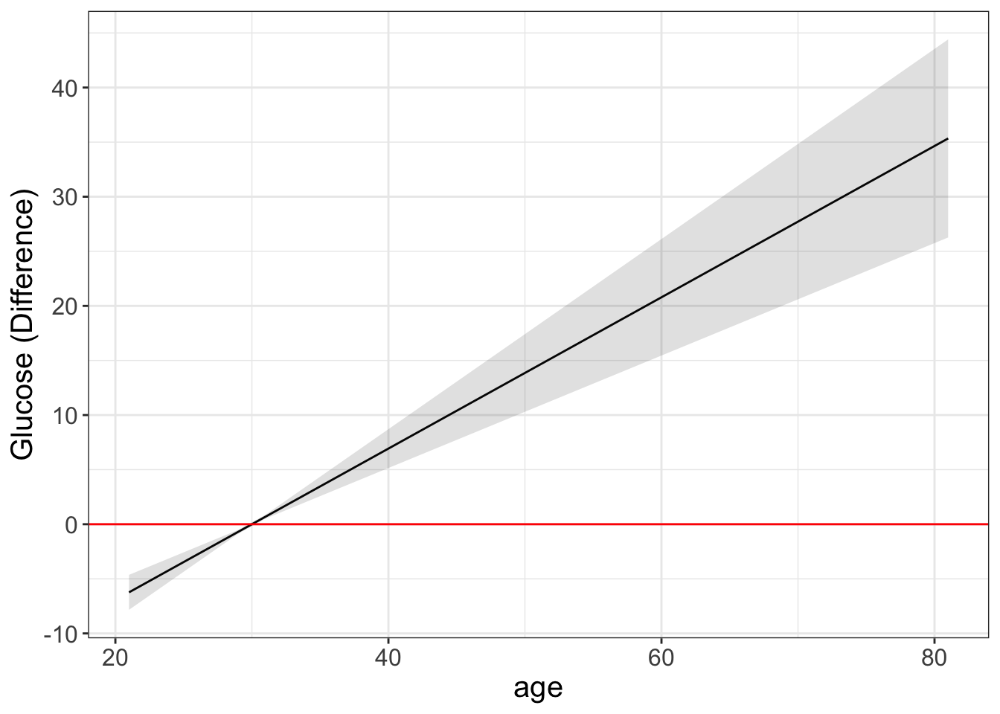
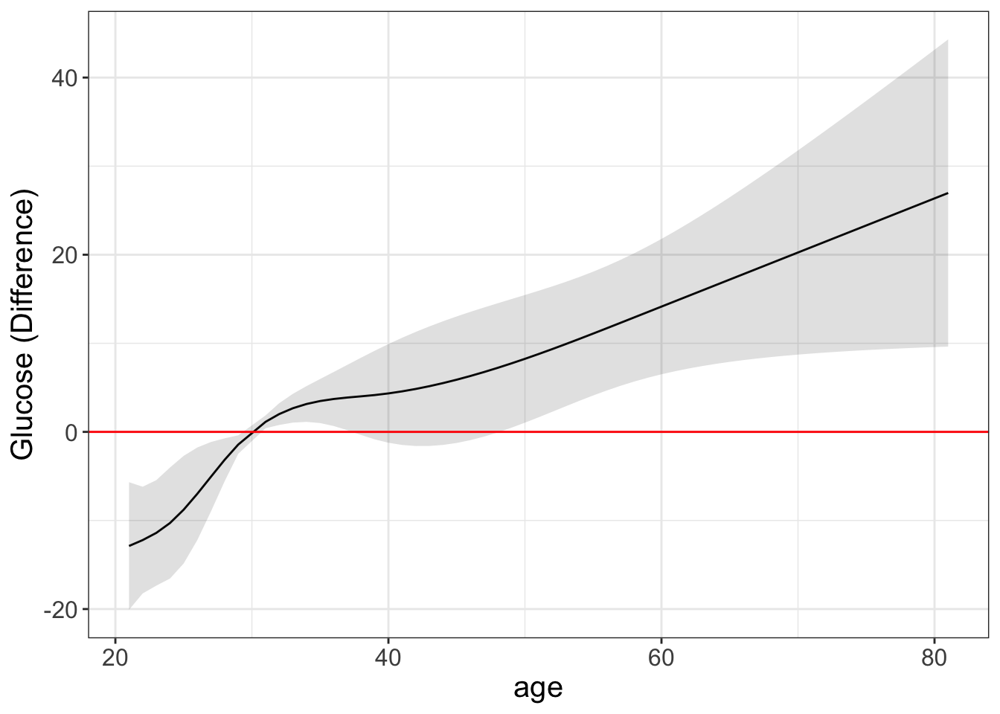

Code
library(dplyr)
library(ggplot2)
library(broom)
library(mlbench)
library(rms)
library(emmeans)
library(ggeffects)library(dplyr)
library(ggplot2)
library(broom)
library(mlbench)
library(rms)
library(emmeans)
library(ggeffects)data("PimaIndiansDiabetes2", package = "mlbench")
PimaIndiansDiabetes2 <- PimaIndiansDiabetes2 %>%
filter(!is.na(glucose))
str(PimaIndiansDiabetes2)'data.frame': 763 obs. of 9 variables:
$ pregnant: num 6 1 8 1 0 5 3 10 2 8 ...
$ glucose : num 148 85 183 89 137 116 78 115 197 125 ...
$ pressure: num 72 66 64 66 40 74 50 NA 70 96 ...
$ triceps : num 35 29 NA 23 35 NA 32 NA 45 NA ...
$ insulin : num NA NA NA 94 168 NA 88 NA 543 NA ...
$ mass : num 33.6 26.6 23.3 28.1 43.1 25.6 31 35.3 30.5 NA ...
$ pedigree: num 0.627 0.351 0.672 0.167 2.288 ...
$ age : num 50 31 32 21 33 30 26 29 53 54 ...
$ diabetes: Factor w/ 2 levels "neg","pos": 2 1 2 1 2 1 2 1 2 2 ...ggplot(PimaIndiansDiabetes2, aes(age, glucose)) +
geom_point() +
stat_smooth(method = "loess", formula = y ~ x, alpha = 0.17) +
theme_bw()
lin_reg <- lm(glucose ~ age, data = PimaIndiansDiabetes2)
# Summarize the model
summary(lin_reg)
Call:
lm(formula = glucose ~ age, data = PimaIndiansDiabetes2)
Residuals:
Min 1Q Median 3Q Max
-88.058 -21.310 -3.727 17.615 85.123
Coefficients:
Estimate Std. Error t value Pr(>|t|)
(Intercept) 98.63245 3.19767 30.845 < 2e-16 ***
age 0.69292 0.09061 7.647 6.21e-14 ***
---
Signif. codes: 0 '***' 0.001 '**' 0.01 '*' 0.05 '.' 0.1 ' ' 1
Residual standard error: 29.45 on 761 degrees of freedom
Multiple R-squared: 0.07136, Adjusted R-squared: 0.07014
F-statistic: 58.48 on 1 and 761 DF, p-value: 6.208e-14plot residuals vs x
lin_reg.pred <- augment(lin_reg)
ggplot(lin_reg.pred, aes(x=age, y=.resid)) +
geom_hline(yintercept=0, color = "red", linetype = "dashed") +
geom_point(alpha = 0.2) +
stat_smooth(method = "loess", formula = y ~ x, alpha = 0.17) +
theme_bw()+
theme(legend.text = element_text(size = 25),
text = element_text(size=25)) +
labs(x = "Age",
y = "Raw residuals") +
annotate("rect",
xmin = quantile(lin_reg.pred$age,0.025),
xmax = quantile(lin_reg.pred$age,0.975),
ymin = -Inf, ymax = Inf, alpha = 0.2, fill = "#99CCCC")
lin_reg_spl <- lm(glucose ~ rcs(age), data = PimaIndiansDiabetes2)
anova(lin_reg, lin_reg_spl, test = "LRT")Analysis of Variance Table
Model 1: glucose ~ age
Model 2: glucose ~ rcs(age)
Res.Df RSS Df Sum of Sq Pr(>Chi)
1 761 659805
2 758 654730 3 5075.5 0.1178The model with splines tends to fit better
AIC(lin_reg, lin_reg_spl) df AIC
lin_reg 3 7331.043
lin_reg_spl 6 7331.151anova(lin_reg_spl)Analysis of Variance Table
Response: glucose
Df Sum Sq Mean Sq F value Pr(>F)
rcs(age) 4 55778 13944.6 16.144 1.073e-12 ***
Residuals 758 654730 863.8
---
Signif. codes: 0 '***' 0.001 '**' 0.01 '*' 0.05 '.' 0.1 ' ' 1summary(lin_reg_spl)
Call:
lm(formula = glucose ~ rcs(age), data = PimaIndiansDiabetes2)
Residuals:
Min 1Q Median 3Q Max
-84.835 -21.164 -4.087 18.592 87.798
Coefficients:
Estimate Std. Error t value Pr(>|t|)
(Intercept) 97.0744 34.8681 2.784 0.0055 **
rcs(age)age 0.6411 1.5441 0.415 0.6781
rcs(age)age' 33.8231 48.3944 0.699 0.4848
rcs(age)age'' -69.2920 86.5649 -0.800 0.4237
rcs(age)age''' 44.1343 44.2471 0.997 0.3189
---
Signif. codes: 0 '***' 0.001 '**' 0.01 '*' 0.05 '.' 0.1 ' ' 1
Residual standard error: 29.39 on 758 degrees of freedom
Multiple R-squared: 0.0785, Adjusted R-squared: 0.07364
F-statistic: 16.14 on 4 and 758 DF, p-value: 1.073e-12ðŸ˜
lin_reg_spl.pred <- predict(lin_reg_spl, type = "response", interval = "confidence")
ggplot(lin_reg.pred, aes(x = age)) +
stat_smooth(aes(y = glucose, color = "LOESS"), method = "loess", formula = y ~ x, se = FALSE,) +
geom_line(aes(y = .fitted, color = "Linear regression"), linewidth = 1) +
geom_line(aes(y = lin_reg_spl.pred[,c("fit")], color = "Linear regression with spline"), linewidth = 1) +
scale_color_manual(values=c("LOESS" = "#CC3333",
"Linear regression" = "cyan4",
"Linear regression with spline" = "goldenrod2")) +
labs(x = "Age", y = "Glucose", color = "") +
theme_bw() +
theme(legend.title = element_text(size = 15, face = 'bold'),
legend.text = element_text(size = 15),
text = element_text(size=15),legend.position="bottom")
#### Visualization
ggemmeans(lin_reg, terms = "age") %>%
plot(add.data = F)
ggemmeans(lin_reg_spl, terms = "age") %>%
plot(add.data = F)
We compare to age 30.
age_range <- with(PimaIndiansDiabetes2, min(age):max(age))
ref <- 30
lin_reg.emm <- emmeans(lin_reg, ~ age, at = list(age = age_range), type = "response")
lin_reg.ctrs <- emmeans::contrast(lin_reg.emm, "trt.vs.ctrl", ref = paste0("age", ref),
infer = T, adjust = "none")
lin_reg.ctrs %>%
as.data.frame() %>%
bind_cols("age" = age_range[age_range != ref]) %>%
ggplot(., aes(x=age, y=estimate)) +
geom_line() +
geom_ribbon(aes(ymin=lower.CL, ymax=upper.CL), alpha=0.15, linetype=0) +
geom_hline(yintercept=0, color = "red") +
labs(x = "age", y = "Glucose (Difference)") +
theme_bw() +
theme(legend.title = element_text(size = 15, face = 'bold'),
legend.text = element_text(size = 15),
text = element_text(size=15),legend.position="bottom")
lin_reg_spl.emm <- emmeans(lin_reg_spl, ~ age, at = list(age = age_range), type = "response")
lin_reg_spl.ctrs <- emmeans::contrast(lin_reg_spl.emm, "trt.vs.ctrl", ref = paste0("age", ref),
infer = T, adjust = "none")
lin_reg_spl.ctrs %>%
as.data.frame() %>%
bind_cols("age" = age_range[age_range != ref]) %>%
ggplot(., aes(x=age, y=estimate)) +
geom_line() +
geom_ribbon(aes(ymin=lower.CL, ymax=upper.CL), alpha=0.15, linetype=0) +
geom_hline(yintercept=0, color = "red") +
labs(x = "age", y = "Glucose (Difference)") +
theme_bw() +
theme(legend.title = element_text(size = 15, face = 'bold'),
legend.text = element_text(size = 15),
text = element_text(size=15),legend.position="bottom")